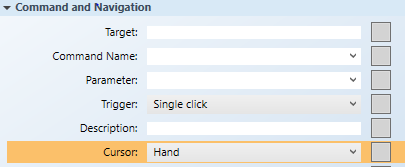
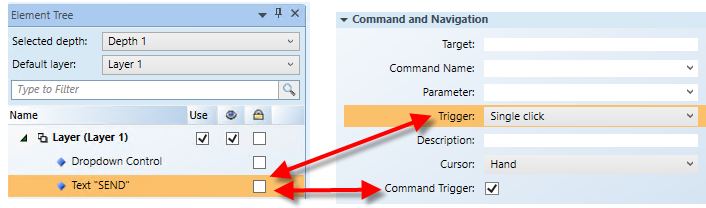
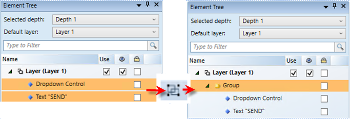

Create a Grouped Command Control
This is just one example of how to draw and combine multiple command controls to create a Grouped command control.
- You have reviewed or completed the Preparing to Create Controls to Command Objects workflow.
- You have reviewed the Command and Navigation Properties and have a full understanding of the fields and the options available to you.
- To create a new command control on the graphic, from the File menu, select New Graphic
 .
. - To draw the dropdown command control, do the following:
- Click Command Control
 , and draw a rectangular shape on the canvas.
, and draw a rectangular shape on the canvas. - From the Property View (Command Control Properties) expand the Command Control properties, and from the Control Type drop-down menu, select Dropdown.

- In the Parameter Name field, type the data point’s Parameter name obtained from the Models and Functions Command Configuration table. This field is case–sensitive. This property will be the same Parameter property later defined in the Group’s Command and Navigation section.
- For this example, type: Value.
- With the dropdown command still active on the canvas, navigate to the Command and Navigation property, from the Cursor drop-down menu, select the cursor type you want to display when the mouse is placed over the command control in runtime mode.

- NOTE: The cursor must be set for each child element or command control of the parent, which is the Group command, but not at the Group level.
- Leave all the other Command and Navigation properties, as is.
- To draw the Send button, do the following:
- Click the Text
 element, and draw a text element on the canvas.
element, and draw a text element on the canvas. - From the Property View (Text Properties) in the Text field, highlight
Textand then type Send. - Expand the Command and Navigation properties, and select the Command Trigger check box. This allows the Send button to be the command trigger that initiates the command.
- From the Trigger drop-down menu, select how to initiate the command: Single click or Double click.

- To format the Send element, from the Property view (Text Properties), expand the Colors property. Format the Send button using the following properties.
- Background: Type the name of a color for the background.
- Stroke: Type a name of a color for the text characters.
- To create the Group command control:
- Navigate to the Element Tree view, select Dropdown Control and hold down the CTRL key and then select Text „SEND“.
- In the Home tab, Selection group, click Group .
- Text “SEND” and Dropdown Control are now children of the Group.
